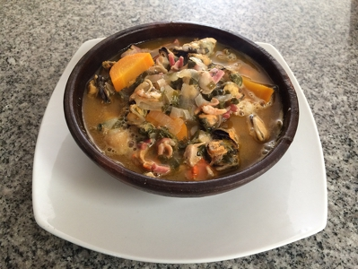

Recetas de mariscos
Homepage
Products
Services
Clients
Support
Welcome to Recetas de mariscos
Photo gallery
2021.06.23 22:05

<div class="mc_vtvc_th b_canvas"><div class="cico" style="width:234px;height:131px;"><div class="rms_iac" style="height:131px;line-height:131px;width:234px;" data-height="131" data-width="234" data-alt="Receta de pastas con mariscos I Jorge Rausch" data-role="presentation" data-class="rms_img" data-src="https://tse4.mm.bing.net/th?id=OVP.SLRbH0GCnKwc8i4Rh9gHXgEsDh" frameborder="0" allow="accelerometer; autoplay; encrypted-media; gyroscope; picture-in-picture" allowfullscreen>
Menu
300 ideas de Recetas - Mariscos y pescados | comida, recetas .
Las 10 mejores recetas de mariscos - Comida Kraft - Kraft Foods
16 riquísimas recetas con mariscos que no puedes dejar .
20 recetas de verano con marisco - ABC de Sevilla
Cazuela de mariscos | Recetas fáciles - Superama
recetas mexicanas de mariscos y pescados - Cocina Delirante
Recetas de Marisco - 805 recetas fáciles y gourmet
Mariscos al ajillo | Laylita.com – Recetas de Cocina
Recetas de pescado y mariscos – Laylita.com – Recetas de .
9 recetas de marisco fáciles y baratas para Navidad - El Español
300 ideas de Recetas - Mariscos y pescados | comida, recetas .
Las 10 mejores recetas de mariscos - Comida Kraft - Kraft Foods
16 riquísimas recetas con mariscos que no puedes dejar .
20 recetas de verano con marisco - ABC de Sevilla
Cazuela de mariscos | Recetas fáciles - Superama
sencilla y rápida para preparar al ajillo, una exquisita combinación de camarones, calamar, y .
recetas mexicanas de mariscos y pescados - Cocina Delirante
Recetas de Marisco - 805 recetas fáciles y gourmet
Mariscos al ajillo | Laylita.com – Recetas de Cocina
Recetas de pescado y mariscos – Laylita.com – Recetas de .
9 recetas de marisco fáciles y baratas para Navidad - El Español